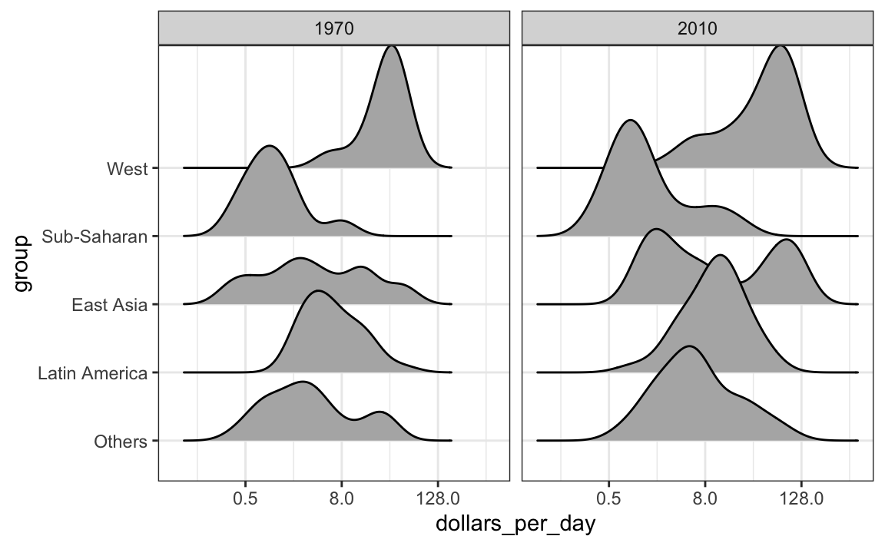

Capítulo 9 Visualización de datos en la práctica
En este capítulo, demostraremos cómo el código relativamente sencillo de ggplot2 puede crear gráficos esclarecedores y estéticamente agradables. Como motivación, crearemos gráficos que nos ayudarán a comprender mejor las tendencias de la salud y la economía mundial. Implementaremos lo que aprendimos en los capítulos 7 y 8.16 y aprenderemos a expandir el código para perfeccionar los gráficos. A medida que avancemos en nuestro estudio de caso, describiremos los principios generales más relevantes a la visualización de datos y aprenderemos conceptos como facetas, gráficos de series de tiempo, transformaciones y gráficos ridge.
9.1 Estudio de caso: nuevas ideas sobre la pobreza
Hans Rosling29 era el cofundador de la Fundación Gapminder30, una organización dedicada a educar al público mediante datos para disipar mitos comunes sobre el llamado mundo en desarrollo. La organización utiliza datos para mostrar cómo las tendencias actuales en los campos de salud y economía contradicen las narrativas que emanan de la cobertura sensacionalista de los medios de catástrofes, tragedias y otros eventos desafortunados. Como se indica en el sitio web de la Fundación Gapminder:
Los periodistas y cabilderos cuentan historias dramáticas. Ese es su trabajo. Cuentan historias sobre eventos extraordinarios y personas inusuales. Las historias dramáticas se acumulan en las mentes de las personas en una visión del mundo demasiado dramática y con fuertes sentimientos de estrés negativo: “¡El mundo está empeorando!”, “¡Somos nosotros contra ellos!”, “¡Las demás personas son extrañas!”, " ¡La población sigue creciendo! " y “¡A nadie le importa!”
Hans Rosling se dedicó, en su propia manera dramática, a educar al público sobre tendencias basadas en datos utilizando visualizaciones de datos eficaces. Esta sección se basa en dos charlas que ejemplifican esta perspectiva educativa: New Insights on Poverty31 y The Best Stats You’ve Ever Seen32. Específicamente, en esta sección usamos datos para intentar responder a las siguientes dos preguntas:
- ¿Es una caracterización justa del mundo actual decir que está dividido en naciones ricas occidentales y el mundo en desarrollo compuesto por África, Asia y América Latina?
- ¿Ha empeorado la desigualdad de ingresos en todos los países durante los últimos 40 años?
Para responder a estas preguntas, utilizaremos el set de datos gapminder proveído por dslabs. Este set de datos se creó utilizando varias hojas de cálculo disponibles de la Fundación Gapminder. Pueden acceder a la tabla de esta manera:
library(tidyverse)
library(dslabs)
data(gapminder)
gapminder %>% as_tibble()
#> # A tibble: 10,545 x 9
#> country year infant_mortality life_expectancy fertility population
#> <fct> <int> <dbl> <dbl> <dbl> <dbl>
#> 1 Albania 1960 115. 62.9 6.19 1636054
#> 2 Algeria 1960 148. 47.5 7.65 11124892
#> 3 Angola 1960 208 36.0 7.32 5270844
#> 4 Antigu… 1960 NA 63.0 4.43 54681
#> 5 Argent… 1960 59.9 65.4 3.11 20619075
#> # … with 10,540 more rows, and 3 more variables: gdp <dbl>,
#> # continent <fct>, region <fct>9.1.1 La prueba de Hans Rosling
Igual que en el video New Insights on Poverty, comenzamos probando nuestros conocimientos sobre las diferencias en la mortalidad infantil en diferentes países. Para cada uno de los cinco pares de países a continuación, ¿qué países creen que tuvieron las tasas de mortalidad infantil más altas en 2015? ¿Qué pares creen que son más similares?
- Sri Lanka o Turquía
- Polonia o Corea del Sur
- Malasia o Rusia
- Pakistán o Vietnam
- Tailandia o Sudáfrica
Al responder a estas preguntas sin datos, los países no europeos suelen ser elegidos como los que tienen tasas de mortalidad infantil más altas: Sri Lanka sobre Turquía, Corea del Sur sobre Polonia y Malasia sobre Rusia. También es común suponer que los países considerados como parte del mundo en desarrollo: Pakistán, Vietnam, Tailandia y Sudáfrica, tienen tasas de mortalidad igualmente altas.
Para responder a estas preguntas con datos, podemos usar dplyr. Por ejemplo, para la primera comparación vemos que:
gapminder %>%
filter(year == 2015 & country %in% c("Sri Lanka","Turkey")) %>%
select(country, infant_mortality)
#> country infant_mortality
#> 1 Sri Lanka 8.4
#> 2 Turkey 11.6Turquía tiene la mayor tasa de mortalidad infantil.
Podemos usar este código en todas las comparaciones y descubrimos lo siguiente:| country | infant mortality | country | infant mortality |
|---|---|---|---|
| Sri Lanka | 8.4 | Turkey | 11.6 |
| Poland | 4.5 | South Korea | 2.9 |
| Malaysia | 6.0 | Russia | 8.2 |
| Pakistan | 65.8 | Vietnam | 17.3 |
| Thailand | 10.5 | South Africa | 33.6 |
9.2 Diagrama de dispersión
La razón por las bajas puntuaciones se deriva de la noción preconcebida de que el mundo está dividido en dos grupos: el mundo occidental (Europa occidental y América del Norte), caracterizado por una larga vida y familias pequeñas, versus el mundo en desarrollo (África, Asia y América Latina), caracterizados por cortos períodos de vida y familias numerosas. ¿Pero los datos respaldan esta visión dicotómica?
Los datos necesarios para responder a esta pregunta también están disponibles en nuestra tabla gapminder. Usando nuestras recién aprendidas habilidades de visualización de datos, podemos enfrentar este desafío.
Para analizar esta visión del mundo, nuestro primer gráfico es un diagrama de dispersión de la esperanza de vida versus las tasas de fertilidad (número promedio de hijos por mujer). Comenzamos mirando los datos de hace unos 50 años, cuando quizás esta visión se consolidó por primera vez en nuestras mentes.

La mayoría de puntos se dividen en dos categorías distintas:
- Esperanza de vida alrededor de 70 años y 3 o menos hijos por familia.
- Esperanza de vida inferior a 65 años y más de 5 niños por familia.
Para confirmar que estos países son de las regiones que esperamos, podemos usar un color para representar un continente.
filter(gapminder, year == 1962) %>%
ggplot( aes(fertility, life_expectancy, color = continent)) +
geom_point()
En 1962, la visión del “Occidente versus el mundo en desarrollo” se basaba en cierta realidad. ¿Sigue siendo así 50 años después?
9.3 Separar en facetas
Podemos graficar fácilmente los datos de 2012 de la misma manera que lo hicimos para 1962. Sin embargo, para hacer comparaciones, es preferible graficar lado a lado. En ggplot2, logramos esto separando las variables en facetas (faceting en inglés): estratificamos los datos por alguna variable y hacemos el mismo gráfico para cada estrato.
Para separar en facetas, agregamos una capa con la función facet_grid, que automáticamente separa los gráficos. Esta función les permite separar hasta dos variables en facetas usando columnas para representar una variable y filas para representar la otra. La función espera que las variables de fila y de columna estén separadas por un ~. Aquí vemos un ejemplo de un diagrama de dispersión donde agregramos facet_grid como la última capa:
filter(gapminder, year%in%c(1962, 2012)) %>%
ggplot(aes(fertility, life_expectancy, col = continent)) +
geom_point() +
facet_grid(continent~year)
Arriba vemos un gráfico para cada combinación de continente/año. Sin embargo, esto es solo un ejemplo y más de lo que queremos, que es simplemente comparar dos años: 1962 y 2012. En este caso, solo hay una variable y usamos . para que facet_grid sepa que no estamos usando una de las variables:
filter(gapminder, year%in%c(1962, 2012)) %>%
ggplot(aes(fertility, life_expectancy, col = continent)) +
geom_point() +
facet_grid(. ~ year)
Este gráfico muestra claramente que la mayoría de los países se han mudado del conjunto mundo en desarrollo al conjunto mundo occidental. En 2012, la visión del mundo occidental versus el mundo en desarrollo ya no tiene sentido. Esto es particularmente evidente cuando se compara Europa con Asia, este último ahora con varios países que han realizado grandes mejoras.
9.3.1 facet_wrap
Para explorar cómo sucedió esta transformación a través de los años, podemos hacer el gráfico para varios años. Por ejemplo, podemos agregar los años 1970, 1980, 1990 y 2000. Sin embargo, si hacemos esto, no queremos a todos los gráficos en la misma fila, que es lo que hace facet_grid por defecto, ya que aparecerán demasiado estrechos para mostrar los datos. En cambio, queremos usar múltiples filas y columnas. La función facet_wrap nos permite hacer esto automáticamente acomodando la serie de gráficos para que cada imagen tenga dimensiones visibles:
years <- c(1962, 1980, 1990, 2000, 2012)
continents <- c("Europe", "Asia")
gapminder %>%
filter(year %in% years & continent %in% continents) %>%
ggplot( aes(fertility, life_expectancy, col = continent)) +
geom_point() +
facet_wrap(~year)
Este gráfico muestra claramente cómo la mayoría de los países asiáticos han mejorado a un ritmo mucho más rápido que los europeos.
9.3.2 Escalas fijas para mejores comparaciones
La elección por defecto del rango de los ejes es importante. Cuando no se usa facet, este rango está determinado por los datos que se muestran en el gráfico. Cuando usan facet, este rango está determinado por los datos que se muestran en todos los gráficos y, por lo tanto, se mantienen fijos en todos los gráficos. Esto hace que las comparaciones entre gráficos sean mucho más fáciles. Por ejemplo, en el gráfico anterior, podemos ver que la esperanza de vida ha aumentado y la fertilidad ha disminuido en la mayoría de los países. Vemos esto porque la nube de puntos se mueve. Este no es el caso si ajustamos las escalas:
filter(gapminder, year%in%c(1962, 2012)) %>%
ggplot(aes(fertility, life_expectancy, col = continent)) +
geom_point() +
facet_wrap(. ~ year, scales = "free")
En el gráfico anterior, debemos prestar atención particular al rango para notar que el gráfico de la derecha tiene una mayor esperanza de vida.
9.4 Gráficos de series de tiempo
Las visualizaciones anteriores ilustran efectivamente que los datos ya no son compatibles con la visión del mundo occidental frente al mundo en desarrollo. Al ver estos gráficos, surgen nuevas preguntas. Por ejemplo, ¿qué países están mejorando más y cuáles menos? ¿La mejora fue constante durante los últimos 50 años o se aceleró más durante ciertos períodos? Para una mirada más detenida que pueda ayudar a responder a estas preguntas, presentamos gráficos de series de tiempo (time series plots en inglés).
Los gráficos de series de tiempo tienen tiempo en el eje-x y un resultado o medida de interés en el eje-y. Por ejemplo, aquí vemos un gráfico de la tendencia de las tasas de fertilidad de Estados Unidos:

Observamos que la tendencia no es lineal en absoluto, sino que durante los años sesenta y setenta se produce una fuerte caída por debajo de 2. Luego, la tendencia vuelve a 2 y se estabiliza durante los años noventa.
Cuando los puntos están regular y densamente espaciados, como vemos arriba, creamos una curva que une los puntos con líneas, para transmitir que estos datos provienen de una sola serie, aquí un país. Para hacer esto, usamos la función geom_line en vez de geom_point.

Esto es particularmente útil cuando comparamos dos países. Si creamos un subconjunto de los datos para incluir dos países, uno de Europa y uno de Asia, entonces adaptamos el código anterior:
countries <- c("South Korea","Germany")
gapminder %>% filter(country %in% countries) %>%
ggplot(aes(year,fertility)) +
geom_line()
Claramente, este no es el gráfico que queremos. En lugar de una línea para cada país, se unen los puntos para ambos países porque no le hemos dicho a ggplot que queremos dos líneas independientes. Para que ggplot entienda que hay dos curvas que se deben hacer por separado, asignamos cada punto a un group, uno para cada país:
countries <- c("South Korea","Germany")
gapminder %>% filter(country %in% countries & !is.na(fertility)) %>%
ggplot(aes(year, fertility, group = country)) +
geom_line()
¿Pero qué línea va con qué país? Podemos asignar colores para hacer esta distinción.
Un efecto secundario útil de usar el argumento color para asignar diferentes colores a los diferentes países es que los datos se agrupan automáticamente:
countries <- c("South Korea","Germany")
gapminder %>% filter(country %in% countries & !is.na(fertility)) %>%
ggplot(aes(year,fertility, col = country)) +
geom_line()
El gráfico muestra claramente cómo la tasa de fertilidad de Corea del Sur cayó drásticamente durante los años sesenta y setenta, y en 1990 tuvo una tasa similar a la de Alemania.
9.4.1 Etiquetas en lugar de leyendas
Para los gráficos de tendencias, recomendamos etiquetar las líneas en lugar de usar leyendas, ya que el espectador puede ver rápidamente qué línea representa qué país. Esta sugerencia aplica a la mayoría de los gráficos: las etiquetas generalmente se prefieren a las leyendas.
Demostramos cómo hacer esto usando los datos de esperanza de vida. Definimos una tabla de datos con las ubicaciones de las etiquetas y luego usamos una segunda asignación solo para estas etiquetas:
labels <- data.frame(country = countries, x = c(1975,1965), y = c(60,72))
gapminder %>%
filter(country %in% countries) %>%
ggplot(aes(year, life_expectancy, col = country)) +
geom_line() +
geom_text(data = labels, aes(x, y, label = country), size = 5) +
theme(legend.position = "none")
El gráfico muestra claramente cómo una mejora en la esperanza de vida siguió a caídas en las tasas de fertilidad. En 1960, los alemanes vivieron 15 años más que los surcoreanos, aunque para 2010 la brecha está completamente cerrada. Ejemplifica la mejora que muchos países no occidentales han logrado en los últimos 40 años.
9.5 Transformaciones de datos
Ahora cambiamos nuestra atención a la segunda pregunta relacionada con la idea común de que la distribución de la riqueza en todo el mundo ha empeorado durante las últimas décadas. Cuando se le pregunta al público en general si los países pobres se han vuelto más pobres y los países ricos se han vuelto más ricos, la mayoría responde que sí. Mediante el uso de estratificación, histogramas, densidades suaves y diagramas de caja, podremos ver si este realmente es el caso. Primero, aprenderemos cómo las transformaciones a veces pueden ayudar a proporcionar resúmenes y gráficos más informativos.
La tabla de datos gapminder incluye una columna con el producto interno bruto de los países, o GDP por sus siglas en inglés. El GDP mide el valor de mercado de los bienes y servicios producidos por un país en un año. El GDP por persona a menudo se usa como un resumen aproximado de la riqueza de un país. Aquí dividimos esta cantidad por 365 para obtener la medida más interpretable de dólares por día. Utilizando los dólares estadounidenses actuales como una unidad, una persona que sobrevive con un ingreso de menos de $2 por día se define como viviendo en la “pobreza absoluta”. Agregamos esta variable a la tabla de datos:
Los valores del GDP se ajustan a la inflación y representan dólares estadounidenses actuales, por lo que estos valores deben ser comparables a lo largo de los años. Por supuesto, estos son promedios de país y dentro de cada país hay mucha variabilidad. Todos los gráficos y las ideas que se describen a continuación se refieren a los promedios de los países y no a los individuos dentro de estos.
9.5.1 Transformación logarítmica
Abajo tenemos un histograma de ingresos diarios desde 1970:
past_year <- 1970
gapminder %>%
filter(year == past_year & !is.na(gdp)) %>%
ggplot(aes(dollars_per_day)) +
geom_histogram(binwidth = 1, color = "black")
Utilizamos el argumento color = "black"para dibujar un límite y distinguir claramente los compartimientos.
En este gráfico, vemos que para la mayoría de los países, los promedios están por debajo de $10 por día. Sin embargo, la mayoría del eje-x está dedicado a 35 países con promedio de menos de $10. Por lo tanto, el gráfico no es muy informativo con respecto a países con valores inferiores a $10 por día.
Sería más informativo poder ver rápidamente cuántos países tienen ingresos diarios promedio de aproximadamente $1 (extremadamente pobre), $2 (muy pobre), $4 (pobre), $8 (promedio), $16 (acomodado), $32 (rico), $64 (muy rico) por día. Estos cambios son multiplicativos y las transformaciones logarítmicas convierten los cambios multiplicativos en aditivos: cuando se usa la base 2, la duplicación de un valor se convierte en un aumento de 1.
Aquí tenemos la distribución si aplicamos una transformación logarítmica base 2:
gapminder %>%
filter(year == past_year & !is.na(gdp)) %>%
ggplot(aes(log2(dollars_per_day))) +
geom_histogram(binwidth = 1, color = "black")
Así logramos ver de cerca a los países de ingresos medios a ingresos bajos.
9.5.2 ¿Qué base?
En el caso anterior, utilizamos la base 2 en las transformaciones logarítmicas. Otras opciones comunes son base \(\mathrm{e}\) (el logaritmo natural) y base 10.
En general, no recomendamos utilizar el logaritmo natural para la exploración y visualización de datos. La razón es porque mientras \(2^2, 2^3, 2^4, \dots\) o \(10^2, 10^3, \dots\) son fáciles de calcular en nuestras cabezas, lo mismo no es cierto para \(\mathrm{e}^2, \mathrm{e}^3, \dots\), por lo que la escala no es intuitiva ni fácil de interpretar.
En el ejemplo de dólares por día, utilizamos la base 2 en lugar de la base 10 porque el rango resultante es más fácil de interpretar. El rango de los valores que se trazan es 0.327, 48.885.
En la base 10, esto se convierte en un rango que incluye muy pocos enteros: solo 0 y 1. Con la base dos, nuestro rango incluye -2, -1, 0, 1, 2, 3, 4 y 5. Es más fácil calcular \(2^x\) y \(10^x\) cuando \(x\) es un entero y entre -10 y 10, por lo que preferimos tener enteros más pequeños en la escala. Otra consecuencia de un rango limitado es que elegir el ancho del compartimiento (binwidth en inglés) es más difícil. Con log base 2, sabemos que un ancho de compartimiento de 1 se convertirá en un compartimiento con rango \(x\) a \(2x\).
Para un ejemplo en el que la base 10 tiene más sentido, consideren los tamaños de poblaciones. Un logaritmo base 10 es preferible ya que el rango para estos es:
filter(gapminder, year == past_year) %>%
summarize(min = min(population), max = max(population))
#> min max
#> 1 46075 8.09e+08Abajo tenemos el histograma de los valores transformados:
gapminder %>%
filter(year == past_year) %>%
ggplot(aes(log10(population))) +
geom_histogram(binwidth = 0.5, color = "black")
En el gráfico anterior, rápidamente vemos que las poblaciones de los países oscilan entre diez mil y diez mil millones.
9.5.3 ¿Transformar los valores o la escala?
Hay dos formas en que podemos usar las transformaciones logarítmicas en los gráficos. Podemos tomar el logaritmo de los valores antes de graficarlos o usar escalas logarítmicas en los ejes. Ambos enfoques son útiles y tienen diferentes ventajas. Si tomamos el logaritmo de los datos, podemos interpretar más fácilmente los valores intermedios en la escala. Por ejemplo, si vemos:
----1----x----2--------3----
para datos transformados con el logaritmo, sabemos que el valor de \(x\) es de aproximadamente 1.5. Si usamos escalas logarítmicas:
----1----x----10------100---
entonces, para determinar x, necesitamos calcular \(10^{1.5}\), que no es fácil de hacer mentalmente. La ventaja de usar escalas logarítmicas es que vemos los valores originales en los ejes. Sin embargo, la ventaja de mostrar escalas logarítmicas es que los valores originales se muestran en el gráfico y son más fáciles de interpretar. Por ejemplo, veríamos “32 dólares por día” en lugar de “5 log base 2 dólares por día”.
Como aprendimos anteriormente, si queremos escalar el eje con logaritmos, podemos usar la función scale_x_continuous. En vez de primero tomar el logaritmo de los valores, aplicamos esta capa:
gapminder %>%
filter(year == past_year & !is.na(gdp)) %>%
ggplot(aes(dollars_per_day)) +
geom_histogram(binwidth = 1, color = "black") +
scale_x_continuous(trans = "log2")
Tengan en cuenta que la transformación logarítmica base 10 tiene su propia función: scale_x_log10(), pero actualmente la base 2 no tiene, aunque fácilmente podríamos definir una.
Hay otras transformaciones disponibles a través del argumento trans. Como aprenderemos más adelante, la transformación de raíz cuadrada (sqrt) es útil cuando se consideran conteos. La transformación logística (logit) es útil cuando se grafican proporciones entre 0 y 1. La transformación reverse es útil cuando queremos que los valores más pequeños estén a la derecha o arriba.
9.6 Cómo visualizar distribuciones multimodales
En el histograma anterior vemos dos protuberancias: una aproximadamente en 4 y otra aproximadamente en 32. En estadística, estas protuberancias a veces se denominan modas (modes en inglés). La moda de una distribución es el valor con la frecuencia más alta. La moda de distribución normal es el promedio. Cuando una distribución, como la anterior, no disminuye monotónicamente de la moda, llamamos a los lugares donde sube y baja de nuevo modas locales y decimos que la distribución tiene modas múltiples.
El histograma anterior sugiere que la distribución de ingreso de los países en 1970 tiene dos modas: una de aproximadamente 2 dólares por día (1 en la escala log 2) y la otra de aproximadamente 32 dólares por día (5 en la escala log 2). Esta bimodalidad es consistente con un mundo dicotómico compuesto por países con ingresos promedio inferiores a $8 (3 en la escala log 2) por día y países por encima de eso.
9.7 Cómo comparar múltiples distribuciones con diagramas de caja y gráficos ridge
De acuerdo con el histograma, los valores de distribución del ingreso de 1970 muestran una dicotomía. Sin embargo, el histograma no nos muestra si los dos grupos de países están en el oeste o forman parte del mundo en desarrollo.
Comencemos examinando rápidamente los datos por región. Reordenamos las regiones por la mediana y usamos una escala logarítmica.
gapminder %>%
filter(year == past_year & !is.na(gdp)) %>%
mutate(region = reorder(region, dollars_per_day, FUN = median)) %>%
ggplot(aes(dollars_per_day, region)) +
geom_point() +
scale_x_continuous(trans = "log2")
Ya podemos ver que efectivamente existe una dicotomía “el oeste versus el resto”: hay dos grupos claros, con el grupo rico compuesto por Norteamérica, Europa del Norte y Occidental, Nueva Zelanda y Australia. Definimos grupos basados en esta observación:
gapminder <- gapminder %>%
mutate(group = case_when(
region %in% c("Western Europe", "Northern Europe","Southern Europe",
"Northern America",
"Australia and New Zealand") ~ "West",
region %in% c("Eastern Asia", "South-Eastern Asia") ~ "East Asia",
region %in% c("Caribbean", "Central America",
"South America") ~ "Latin America",
continent == "Africa" &
region != "Northern Africa" ~ "Sub-Saharan",
TRUE ~ "Others"))Convertimos esta variable group en un factor para controlar el orden de los niveles:
gapminder <- gapminder %>%
mutate(group = factor(group, levels = c("Others", "Latin America",
"East Asia", "Sub-Saharan",
"West")))En la siguiente sección mostramos cómo visualizar y comparar distribuciones entre grupos.
9.7.1 Diagrama de caja
El anterior análisis exploratorio de datos reveló dos características sobre la distribución de ingreso promedio en 1970. Usando un histograma, encontramos una distribución bimodal con los modos relacionados con los países pobres y ricos. Ahora queremos comparar la distribución entre estos cinco grupos para confirmar la dicotomía “el oeste versus el resto”. El número de puntos en cada categoría es lo suficientemente grande como para que un gráfico de resumen pueda ser útil. Podríamos generar cinco histogramas o cinco gráficos de densidad, pero puede ser más práctico tener todos los resúmenes visuales en un gráfico. Por lo tanto, comenzamos apilando diagramas de caja uno al lado del otro. Tengan en cuenta que agregamos la capa theme(axis.text.x = element_text(angle = 90, hjust = 1)) para que las etiquetas de grupo sean verticales, ya que no encajan si las mostramos horizontalmente, y para quitar la etiqueta del eje a fin de hacer espacio.
p <- gapminder %>%
filter(year == past_year & !is.na(gdp)) %>%
ggplot(aes(group, dollars_per_day)) +
geom_boxplot() +
scale_y_continuous(trans = "log2") +
xlab("") +
theme(axis.text.x = element_text(angle = 90, hjust = 1))
p
Los diagramas de caja tienen la limitación de que al resumir los datos en cinco números, se pueden perder características importantes de los datos. Una forma de evitar esto es mostrando los datos.

9.7.2 Gráficos ridge
Mostrar cada punto individual no siempre revela características importantes de la distribución. Aunque no es el caso aquí, cuando el número de puntos de datos es demasiado grande acabamos sobregraficando y mostrar los datos puede ser contraproducente. Los diagramas de caja ayudan con esto al proporcionar un resumen de cinco números, pero esto también tiene limitaciones. Por ejemplo, los diagramas de caja no revelan distribuciones bimodales. Para ver esto, miren los dos gráficos abajo que resumen el mismo set de datos:

En los casos en que nos preocupa que el resumen del diagrama de caja sea demasiado simplista, podemos mostrar densidades suaves o histogramas apilados utilizando gráficos ridge. Como estamos acostumbrados a visualizar densidades con valores en el eje-x, las apilamos verticalmente. Además, debido a que necesitamos más espacio en este enfoque, es conveniente superponerlos. El paquete ggridges incluye una función conveniente para hacer esto. Abajo vemos los datos de ingresos, que mostramos arriba con diagramas de caja, pero ahora visualizados con un gráfico ridge.
library(ggridges)
p <- gapminder %>%
filter(year == past_year & !is.na(dollars_per_day)) %>%
ggplot(aes(dollars_per_day, group)) +
scale_x_continuous(trans = "log2")
p + geom_density_ridges()
Tengan en cuenta que tenemos que invertir el x y y que se usaron para el diagrama de caja. Un parametro útil de geom_density_ridges es scale, que les permite determinar cuánto superponer; por ejemplo, scale = 1 significa que no hay superposición. Valores mayores que 1 resultan en mayor superposición.
Si el número de puntos de datos es lo suficientemente pequeño, podemos agregarlos al gráfico ridge usando el siguiente código:

Por defecto, la altura de los puntos está jittered y no se debe interpretar de ninguna manera. Para mostrar puntos de datos, pero sin usar jitter, podemos usar el siguiente código para agregar lo que se conoce como una representación rug de los datos.
p + geom_density_ridges(jittered_points = TRUE,
position = position_points_jitter(height = 0),
point_shape = '|', point_size = 3,
point_alpha = 1, alpha = 0.7)
9.7.3 Ejemplo: distribuciones de ingresos de 1970 versus 2010
La exploración de datos muestra claramente que en 1970 hubo una dicotomía del “oeste versus el resto”. ¿Pero persiste esta dicotomía? Vamos a usar facet_grid para ver cómo han cambiado las distribuciones. Para comenzar, nos enfocamos en dos grupos: el oeste y el resto. Hacemos cuatro histogramas.
past_year <- 1970
present_year <- 2010
years <- c(past_year, present_year)
gapminder %>%
filter(year %in% years & !is.na(gdp)) %>%
mutate(west = ifelse(group == "West", "West", "Developing")) %>%
ggplot(aes(dollars_per_day)) +
geom_histogram(binwidth = 1, color = "black") +
scale_x_continuous(trans = "log2") +
facet_grid(year ~ west)
Antes de interpretar los hallazgos de este gráfico, notamos que hay más países representados en los histogramas de 2010 que en 1970: los conteos totales son mayores. Una razón para esto es que varios países se fundaron después de 1970. Por ejemplo, la Unión Soviética se dividió en diferentes países durante la década de 1990. Otra razón es que hay mas datos disponibles para más países en 2010.
Rehacemos los gráficos utilizando solo países con datos disponibles para ambos años. En la parte sobre data wrangling de este libro, aprenderemos a usar herramientas de tidyverse que nos permitará escribir código eficiente para esto, pero aquí podemos usar un código sencillo usando la función intersect:
country_list_1 <- gapminder %>%
filter(year == past_year & !is.na(dollars_per_day)) %>%
pull(country)
country_list_2 <- gapminder %>%
filter(year == present_year & !is.na(dollars_per_day)) %>%
pull(country)
country_list <- intersect(country_list_1, country_list_2)Estos 108 constituyen 86% de la población mundial, por lo que este subconjunto debe ser representativo.
Vamos a rehacer el gráfico, pero solo para este subconjunto simplemente agregando country %in% country_list a la función filter:

Ahora vemos que los países ricos se han vuelto un poco más ricos, pero en términos de porcentaje, los países pobres parecen haber mejorado más. En particular, vemos que la proporción de países en desarrollo que ganan más de $16 por día aumentó sustancialmente.
Para ver qué regiones específicas mejoraron más, podemos rehacer los diagramas de caja que hicimos anteriormente, pero ahora agregamos el año 2010 y luego usamos facet para comparar los dos años.
gapminder %>%
filter(year %in% years & country %in% country_list) %>%
ggplot(aes(group, dollars_per_day)) +
geom_boxplot() +
theme(axis.text.x = element_text(angle = 90, hjust = 1)) +
scale_y_continuous(trans = "log2") +
xlab("") +
facet_grid(. ~ year)
Aquí pausamos para presentar otra importante característica de ggplot2. Como queremos comparar cada región antes y después, sería conveniente tener el diagrama de caja de 1970 al lado del de 2010 para cada región. En general, las comparaciones son más fáciles cuando los datos se grafican uno al lado del otro.
Entonces, en lugar de separar en facetas, mantenemos los datos de cada año juntos y pedimos colorearlos (o rellenarlos) según el año. Tengan en cuenta que los grupos se separan automáticamente por año y cada par de diagramas de caja se dibujan uno al lado del otro. Como el año es un número, lo convertimos en un factor ya que ggplot2 asigna automáticamente un color a cada categoría de un factor. Recuerden que tenemos que convertir la columnas year de numérica a factor.
gapminder %>%
filter(year %in% years & country %in% country_list) %>%
mutate(year = factor(year)) %>%
ggplot(aes(group, dollars_per_day, fill = year)) +
geom_boxplot() +
theme(axis.text.x = element_text(angle = 90, hjust = 1)) +
scale_y_continuous(trans = "log2") +
xlab("")
Finalmente, señalamos que si lo más que nos interesa es comparar los valores de antes y después, podría tener más sentido graficar los aumentos porcentuales. Todavía no estamos listos para aprender a codificar esto, pero así es como se vería el gráfico:

La exploración de datos previa sugiere que la brecha de ingresos entre países ricos y pobres se ha reducido considerablemente durante los últimos 40 años. Usamos una serie de histogramas y diagramas de caja para ver esto. Sugerimos una forma sucinta de transmitir este mensaje con solo un gráfico.
Empecemos observando que los gráficos de densidad para la distribución del ingreso en 1970 y 2010 transmiten el mensaje de que la brecha se está cerrando:
gapminder %>%
filter(year %in% years & country %in% country_list) %>%
ggplot(aes(dollars_per_day)) +
geom_density(fill = "grey") +
scale_x_continuous(trans = "log2") +
facet_grid(. ~ year)
En el gráfico de 1970, vemos dos modas claras: países pobres y ricos. En 2010, parece que algunos de los países pobres se han desplazado hacia la derecha, cerrando la brecha.
El próximo mensaje que debemos transmitir es que la razón de este cambio en distribución es que varios países pobres se hicieron más ricos, en lugar de que algunos países ricos se hicieron más pobres. Para hacer esto, podemos asignar un color a los grupos que identificamos durante la exploración de datos.
Sin embargo, primero tenemos que aprender a hacer estas densidades suaves de una manera que conserve la información sobre el número de países en cada grupo. Para entender por qué necesitamos esto, recuerden la discrepancia en el tamaño de cada grupo:
| Developing | West |
|---|---|
| 87 | 21 |
Pero cuando superponemos dos densidades, el comportamiento por defecto es que el área representada por cada distribución sume a 1, independientemente del tamaño de cada grupo:
gapminder %>%
filter(year %in% years & country %in% country_list) %>%
mutate(group = ifelse(group == "West", "West", "Developing")) %>%
ggplot(aes(dollars_per_day, fill = group)) +
scale_x_continuous(trans = "log2") +
geom_density(alpha = 0.2) +
facet_grid(year ~ .)
El gráfico de arriba hace que parezca que hay el mismo número de países en cada grupo. Para cambiar esto, necesitaremos aprender a acceder a las variables calculadas con la función geom_density.
9.7.4 Cómo obtener acceso a variables calculadas
Para que las áreas de estas densidades sean proporcionales al tamaño de los grupos, simplemente multiplicamos los valores del eje-y por el tamaño del grupo. En el archivo de ayuda de geom_density, vemos que las funciones calculan una variable denominada count que hace exactamente esto. Queremos que esta variable, y no la densidad, esté en el eje-y.
En ggplot2, obtenemos acceso a estas variables rodeando el nombre con dos puntos. Por lo tanto, utilizaremos el siguiente mapeo:
Ahora podemos crear el diagrama deseado simplemente cambiando el mapeo en el fragmento del código anterior. También ampliaremos los límites del eje-x.
p <- gapminder %>%
filter(year %in% years & country %in% country_list) %>%
mutate(group = ifelse(group == "West", "West", "Developing")) %>%
ggplot(aes(dollars_per_day, y = ..count.., fill = group)) +
scale_x_continuous(trans = "log2", limit = c(0.125, 300))
p + geom_density(alpha = 0.2) +
facet_grid(year ~ .)
Si queremos que las densidades sean más suaves, usamos el argumento bw para que se use el mismo parámetro de suavizado en cada densidad. Seleccionamos 0.75 después de probar varios valores.

Este gráfico ahora muestra lo que está sucediendo muy claramente. La distribución del mundo en desarrollo está cambiando. Aparece una tercera moda formada por los países que más redujeron la brecha.
Para visualizar si alguno de los grupos definidos anteriormente son la causa principal de estos cambios, rápidamente podemos hacer un gráfico ridge:
gapminder %>%
filter(year %in% years & !is.na(dollars_per_day)) %>%
ggplot(aes(dollars_per_day, group)) +
scale_x_continuous(trans = "log2") +
geom_density_ridges(adjust = 1.5) +
facet_grid(. ~ year)
Otra forma de lograr esto es apilando las densidades una encima de otra:
gapminder %>%
filter(year %in% years & country %in% country_list) %>%
group_by(year) %>%
mutate(weight = population/sum(population)*2) %>%
ungroup() %>%
ggplot(aes(dollars_per_day, fill = group)) +
scale_x_continuous(trans = "log2", limit = c(0.125, 300)) +
geom_density(alpha = 0.2, bw = 0.75, position = "stack") +
facet_grid(year ~ .)
Aquí podemos ver claramente cómo las distribuciones para Asia Oriental, América Latina y otros se desplazan notablemente hacia la derecha. Mientras que África subsahariana permanece estancada.
Noten que ordenamos los niveles del grupo para que la densidad del Occidente se grafique primero, luego África subsahariana. Tener los dos extremos graficados primero nos permite ver mejor la bimodalidad restante.
9.7.5 Densidades ponderadas
Como punto final, notamos que estas distribuciones ponderan cada país igual. Entonces, si la mayoría de la población está mejorando, pero viviendo en un país muy grande, como China, podríamos no apreciar esto. De hecho, podemos ponderar las densidades suaves usando el argumento de mapeo weight. El gráfico entonces se ve así:

Esta figura en particular muestra muy claramente cómo se está cerrando la brecha de distribución de ingresos y que la mayoría de paises que siguen en la pobreza están en África subsahariana.
9.8 La falacia ecológica y la importancia de mostrar los datos
A lo largo de esta sección, hemos estado comparando regiones del mundo. Hemos visto que, en promedio, algunas regiones obtienen mejores resultados que otras. En esta sección, nos enfocamos en describir la importancia de la variabilidad dentro de los grupos al examinar la relación entre las tasas de mortalidad infantil de un país y el ingreso promedio.
Definimos algunas regiones más y comparamos los promedios entre regiones:

La relación entre estas dos variables es casi perfectamente lineal y el gráfico muestra una diferencia dramática. Mientras que en el Occidente muere menos del 0.5% de los bebés, ¡en África subsahariana la tasa es superior al 6%!
Observen que el gráfico utiliza una nueva transformación, la transformación logística.
9.8.1 Transformación logística
La transformación logística o logit para una proporción o tasa \(p\) se define como:
\[f(p) = \log \left( \frac{p}{1-p} \right)\]
Cuando \(p\) es una proporción o probabilidad, la cantidad que transformamos con el logaritmo, \(p/(1-p)\), se llama odds. En este caso \(p\) es la proporción de bebés que sobrevivieron. Los odds nos dicen cuántos más bebés se espera que sobrevivan a que mueran. La transformación logarítmica lo hace simétrico. Si las tasas son iguales, entonces el log odds es 0. Los aumentos multiplicativos se convierten en incrementos positivos o negativos, respectivamente.
Esta escala es útil cuando queremos resaltar diferencias cercanas a 0 o 1. Para las tasas de supervivencia, esto es importante porque una tasa de supervivencia del 90% es inaceptable, mientras que una supervivencia del 99% es relativamente buena. Preferiríamos mucho una tasa de supervivencia más cercana al 99.9%. Queremos que nuestra escala resalte estas diferencias y el logit lo hace. Recuerden que 99.9/0.1 es aproximadamente 10 veces más grande que 99/1, que es aproximadamente 10 veces más grande que 90/10. Al usar el logaritmo, estos incrementos multiplicativos se convierten en aumentos constantes.
9.8.2 Mostrar los datos
Ahora, de vuelta a nuestro gráfico. Basado en el gráfico anterior, ¿concluimos que un país con ingresos bajos está destinado a tener una tasa de supervivencia baja? Además, ¿concluímos que las tasas de supervivencia en el África subsahariana son más bajas que en el sur de Asia, que a su vez son más bajas que en las islas del Pacífico y así sucesivamente?
Saltar a esta conclusión basada en un gráfico que muestra promedios se denomina una falacia ecológica. La relación casi perfecta entre las tasas de supervivencia y los ingresos solo se observa para los promedios a nivel regional. Una vez que mostramos todos los datos, vemos una historia más complicada:

Específicamente, vemos que hay una gran cantidad de variabilidad. Vemos que los países de las mismas regiones pueden ser bastante diferentes y que los países con los mismos ingresos pueden tener diferentes tasas de supervivencia. Por ejemplo, mientras que, en promedio, África subsahariana tuvo los peores resultados económicos y de salud, existe una gran variabilidad dentro de ese grupo. Mauricio y Botswana están mejores que Angola y Sierra Leona, con Mauricio comparable a países occidentales.